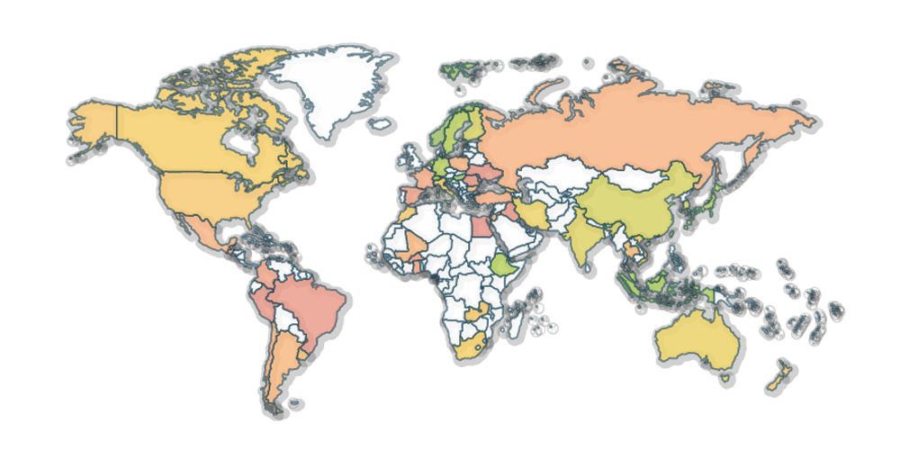

Main question
What is the most important quality of a child for each Country?
Waves

I select a period to view data from a wave (e.g. 2005-2009).
Countries

I want to select all the countries but the tool does not allow me to do it in one step
(problem 1).
Survey questions

I would like to select all the variables at once, instead of selecting just one, in
order to compare the countries I selected during the selected wave among all the variables (problem 2).
Let's show "independence".
Responses

The first result I got is a table with all the raw results that are very hard to
compare (Problem 3).
Map
Now we are speaking, a map where I can compare countries but only based on one
variable. They have implemented also a filter to see a defined range of percentages, cool!
To answer my question I should repeat this process for each variable.